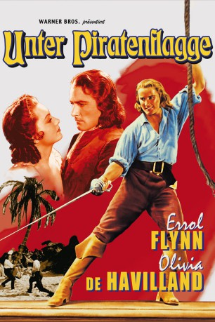

#9225 Unter Piratenflagge
Alternativ: Captain Blood
Auszeichnungen: für 5 Oscars nominiert
 
 IMDB-Wertung: 7.8 / 10
IMDB-Wertung: 7.8 / 10  Metascore: 0
Metascore: 0 
Mit dieser Rolle stieg Errol Flynn zum Superstar auf: Im 17. Jahrhundert wird der Arzt Peter Blood aus politischen Gründen ungerechterweise zu einer Haftstrafe verurteilt, flieht und wird Pirat. Der Film war dem attraktiven Hobby-Seefahrer aus Tasmanien wie auf den Leib geschrieben – Flynn etablierte sich damit als Hollywoods Abenteuerheld par excellence. Dass er auch als gallanter Liebhaber überzeugte, dem Legionen von weiblichen Fans zu Füßen lagen, hat er nicht zuletzt seiner perfekt besetzten Partnerin zu verdanken: Mit der bezaubernden Olivia de Havilland drehte er insgesamt acht gemeinsame Filme. Michael Curtiz inszeniert mit großer Geste, Erich Wolfgang Korngold steuert einen mitreißenden Soundtrack bei, Basil Rathbone und Lionel Atwill sind als überzeugende Schurken zu sehen: Unter Piratenflagge entführt uns auf die sieben Meere beispielloser Leinwandabenteuer.
Jahr: 1935
Dauer: 119 Minuten
FSK: 12
Land: USA Studio: The Vitaphone CorporationTonspuren: AAC2.0 - ,
Untertitel: Deutsch, Englisch,
Auflösung: 1080p (1428x1080) Größe: 4177 MB
Genre: Action, Abenteuer
Regisseur: Michael Curtiz
Drehbuch: Rafael Sabatini
Soundtrack: Erich Wolfgang Korngold
Darsteller:
- Errol Flynn als Peter Blood
 Olivia de Havilland als Arabella Bishop
Olivia de Havilland als Arabella Bishop- Lionel Atwill als Colonel Bishop
 Basil Rathbone als Levasseur
Basil Rathbone als Levasseur- Ross Alexander als Jeremy Pitt
- Guy Kibbee als Hagthorpe
- Henry Stephenson als Lord Willoughby
- Robert Barrat als Wolverstone
- Hobart Cavanaugh als Dr. Bronson
- Donald Meek als Dr. Whacker
- Jessie Ralph als Mrs. Barlow
- Forrester Harvey als Honesty Nuttall
- Frank McGlynn Sr. als Rev. Ogle
- Holmes Herbert als Capt. Gardner
- David Torrence als Andrew Baynes
 J. Carrol Naish als Cahusac
J. Carrol Naish als Cahusac- Pedro de Cordoba als Don Diego
 Harry Cording als Kent
Harry Cording als Kent- Leonard Mudie als Baron Jeffreys
- Ivan F. Simpson als Prosecutor
- E.E. Clive als Clerk of the Court
 Colin Kenny als Lord Chester Dyke
Colin Kenny als Lord Chester Dyke- Gardner James als Slave
- Vernon Steele als King James
- Gene Alsace als Oliver Clark - Pirate (uncredited)
- Matthew 'Stymie' Beard als Governor's Attendant (uncredited)
- Ted Billings als Juror (uncredited)
- Yola d'Avril als Girl in Tavern (uncredited)
- Halliwell Hobbes als Lord Sunderland (uncredited)
- Murray Kinnell als Court Clerk (uncredited)
 Chris-Pin Martin als Sentry (uncredited)
Chris-Pin Martin als Sentry (uncredited)- Jim Mason als Pirate (uncredited)
- Tina Menard als Girl in Tavern (uncredited)
 Kansas Moehring als Pirate (uncredited)
Kansas Moehring als Pirate (uncredited)- John Northpole als Pirate (uncredited)
 Artie Ortego als Pirate (uncredited)
Artie Ortego als Pirate (uncredited)- Paul Panzer als Pirate (uncredited)
- Frank Puglia als French Officer (uncredited)
 Buddy Roosevelt als Pirate (uncredited)
Buddy Roosevelt als Pirate (uncredited)- Tom Steele als Pirate (uncredited)
- Jim Thorpe als Pirate (uncredited)
 Blackie Whiteford als Pirate (uncredited)
Blackie Whiteford als Pirate (uncredited)- George Hassell als Governor Steed
- Stuart Casey als Capt. Hobart
- David Cavendish als Lord Gildoy
- Mary Forbes als Mrs. Steed
- Maude Leslie als Mrs. Baynes
- Sam Appel als Gunner (uncredited)
- Reginald Barlow als Dixon (uncredited)
- Wayne Castle als One-Legged Pirate (uncredited)
Datei: X:\1900-1949\Unter Piratenflagge (1935, FSK12, 1428x1080).mkv seit 20.07.2018
Festplatte: HD 1900-1970
 Es gibt insgesamt 80 Filme in der Gruppe '1900-1949'
Es gibt insgesamt 80 Filme in der Gruppe '1900-1949'